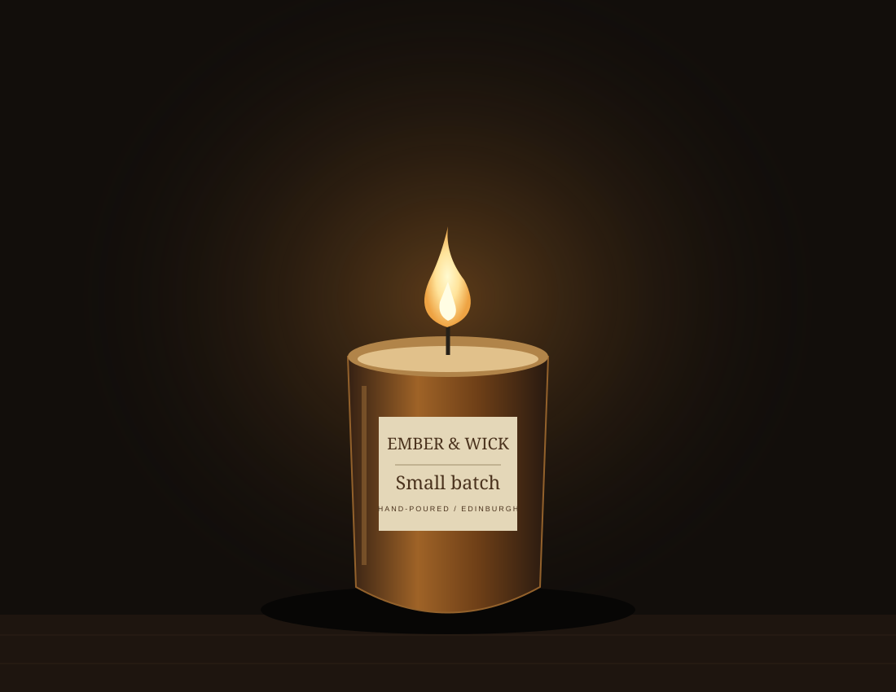

The Evening Set £72
Bothy and Library in 200g jars, with a brass wick trimmer.
Ask about the set ↗
SMALL-BATCH SOY CANDLES / EDINBURGH
Hand-poured soy wax, cotton wicks
and scents built like perfume.
A little light. A little less hurry.
HAND-POURED IN EDINBURGH / MADE TO BE LIT, NOT SAVED
THE EVERYDAY RITUAL
Six bestsellers from the wider collection.
200g amber jar · 55-hour indicative burn
Cotton wick · hand-poured soy wax
Enquiry by email. No purchase takes place here.
NOT A FACTORY. A WORKSHOP.
Craft process described by the fictional maker's brief.
A candle is a small way of deciding
how a room should feel.
A LITTLE LIGHT, GIVEN
Bothy and Library in 200g jars, with a brass wick trimmer.
Ask about the set ↗Three 90g travel candles of your choice, in a linen-lined box.
Choose three scents for your enquiry.
Choose scents above ↗BURN IT WELL
Never leave a burning candle unattended.
Keep away from children, pets and draughts.
Place on a heat-resistant surface.
Let the wax melt to the edge, usually two to three hours, to help prevent tunnelling.
Cut to 5mm before every burn for a clean, steady flame.
Then extinguish safely. The wick can mushroom and the glass gets hot. Stop with 10mm of wax remaining.
Put it back on once completely cool to keep the scent strong. Never use the lid to extinguish.
TEN CHAIRS. ONE LONG TABLE.
Once a month in Leith. Blend a scent, pour two candles,
and take them home. Wine and oatcakes included.
ILLUSTRATIVE DATE / THURSDAY 17 DECEMBER 2026 / 7PM
£55 / 10 PLACES / CONFIRM BY EMAIL
This is a small static showcase. The bag stays at zero. Product links prepare enquiries, not orders. Delivery rates, current stock and workshop dates require confirmation with the maker.
Back to the candles ↑